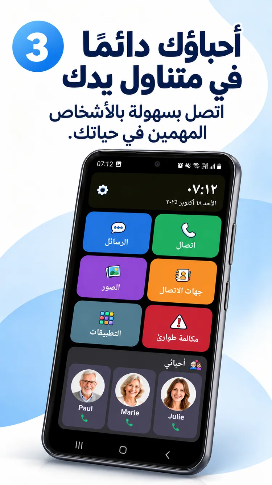
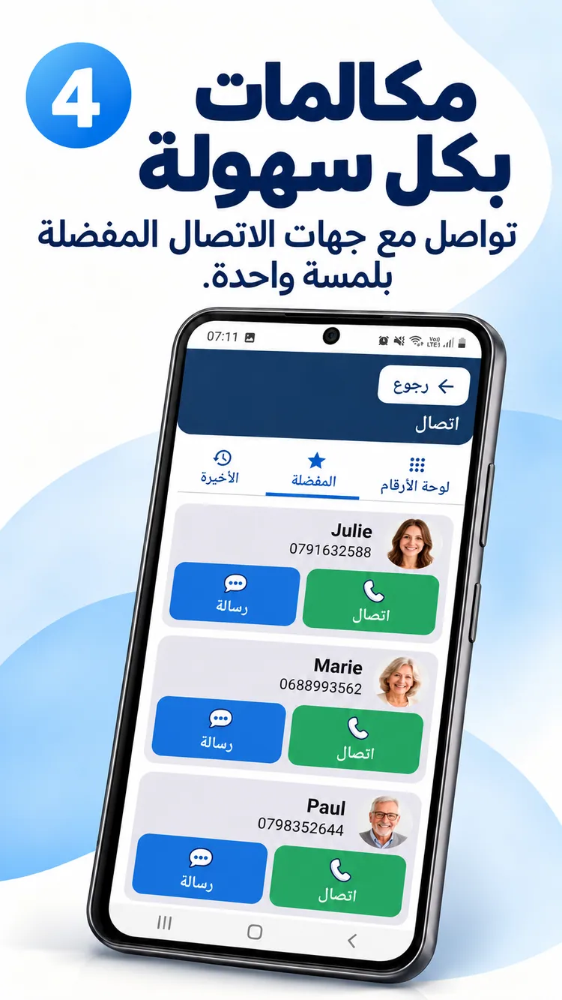
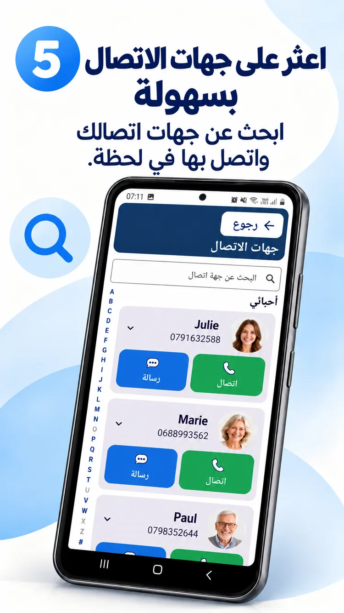
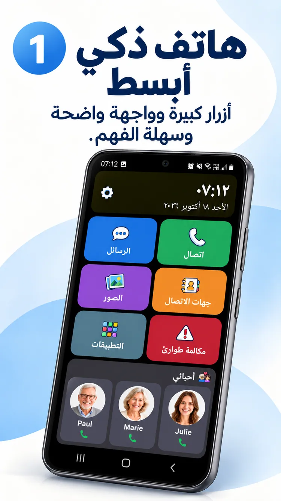

01
صورة واحدة. اتصال واحد.
أحباؤك دائمًا بالقرب منك.


شاشة رئيسية أسهل على أندرويد، وأحباؤك قريبون منك، ووقت أكبر لما يهمك.
يحول ClikoSpido الشاشة الرئيسية لهاتف أندرويد متوافق إلى مساحة واضحة ومألوفة وقابلة للتخصيص، لتقليل الحيرة وزيادة الاستقلالية.
أزرار كبيرة وخيارات مفيدة ومساحة واضحة للأشياء المهمة.

المكالمات والرسائل وجهات الاتصال والصور والكاميرا واختصار الطوارئ في متناولك.
صورة ترويجية توضيحية؛ قد تختلف واجهة التطبيق المثبت.
أحباؤك دائمًا بالقرب منك.

لوحة أرقام كبيرة وعناصر واضحة.

صور وبحث أبجدي.

يمكن لأحد أفراد العائلة تعديل الشاشة واختيار التطبيقات المسموح بها وحماية بعض الإعدادات برمز PIN.
تصفح ثماني صور ترويجية بلغتك.

إجابات واضحة قبل البدء.
نعم، على هواتف أندرويد المتوافقة كشاشة رئيسية افتراضية.
لا. يمكنك تبسيط هاتف أندرويد متوافق تملكه بالفعل.
لا. يفتح زر الرسائل تطبيق المراسلة المعتاد.
لا. يمكنه الاتصال بشخص تم اختياره، ولا يحل محل خدمات الطوارئ.